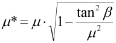

|
|
|


圆锥过盈配合
使用该模块计算圆锥过盈配合的使用可靠性。确定安装条件。
提供以下 计算方法：
- 按 Kollmann [78] 定义的方法，验证与尺寸计算。
- 按 DIN 7190-2:2017 定义的方法
注意：
锥角是圆锥锥面与其轴线之间的夹角 β。圆锥的张开角 α 是锥度角的两倍。
计算说明：
- 所有已知的研究都集中在由杨氏模量相同的材料制成的外部和内部元件上。（Kollmann）
- 如果选择 DIN 7190-2 中描述的方法，且轴和轮毂由不同材料制成，则轴材料应使用杨氏模量较高的材料。
- 圆锥过盈配合必须始终在上端有一个止挡。因此，程序只处理这种情况。
- 圆锥过盈配合通常用螺栓轴向夹紧。您必须通过测量长度来仔细检查连接。仅用扭矩扳手拧紧不够精确。圆锥过盈配合仅在特殊情况下通过压装连接。
- 为了在不用螺栓夹紧的情况下按 Kollmann 进行计算，在纵向方向上使用特殊的摩擦系数。该摩擦系数按 Voith 公司发行的 Antriebstechnik 12 (1973) 系列文章计算。

纵向滑动粘着系数： Galle 研究（参见 Kollmann [78] 表 2.20）中详述的摩擦系数：
| 材料配对 | 预载荷 | 静摩擦系数 |
| Ck60/16MnCr5 | - | 0.299 |
| 42CrMo4/16MnCr5 | - | 0.269 |
| 31CrMoV9/31CrMoV9 | - | 0.247 |
| Ck60/16MnCr5 | U | 0.407 |
| 42CrMo4/16MnCr5 | U | 0.297 |
| 31CrMoV9/16MnCr5 | U | 0.375 |
| 31CrMoV9/31CrMoV9 | U | 0.468 |
| Ck60/16MnCr5 | W | 0.357 |
| 42CrMo4/16MnCr5 | W | 0.472 |
| 31CrMoV9/31CrMoV9 | W | 0.387 |
载荷分类：
| - | 无 |
| U | 圆周弯曲载荷 |
| W | 疲劳扭转载荷 |
没有其他材料组合的粘着系数，因此您需要估算这些值。
径向过盈配合在纵向和周向滑动方向上的粘着系数：DIN 7190 [79] 表 4（参见"摩擦系数"章）中描述的摩擦系数。
Conical Interference Fit
Use this module to calculate the service reliability of a conical interference fit. Determining mounting conditions.
The following calculation methods are available:
- Method as defined by Kollmann [78], Verification and sizing.
- Method as defined in DIN 7190-2:2017
Note:
The cone angle is the angle β between the flank of the cone and its axis. The opening angle α of the cone is twice the size of the angle of taper.
Notes for the calculation:
- All known investigations focus on external and internal components made of materials that have the same Young's modulus. (Kollmann)
- If you select the method described in DIN 7190-2, and the shaft and hub are made of different materials, the material with the higher Young's modulus should be used for the shaft material.
- Conical interference fits must always have a stop at the upper end. For this reason, the program only deals with this situation.
- Conical interference fits are normally clamped axially with a bolt. You must check the joint carefully by measuring the length. Simply tightening it with a torque wrench is not accurate enough. Conical interference fits are only joined by pressing them on in exceptional circumstances.
- To perform the calculation according to Kollmann, without clamping using a bolt, a special coefficient of friction is used in the longitudinal direction. The coefficient of friction is calculated according to a series of articles in Antriebstechnik 12 (1973), issued by the company Voith.
Adhesive coefficient for sliding in the longitudinal direction: Coefficient of friction as detailed in investigations by Galle (see Kollmann [78], Table 2.20):
| Material pairing | Previous load | Coefficient for stiction |
| Ck60/16MnCr5 | - | 0.299 |
| 42CrMo4/16MnCr5 | - | 0.269 |
| 31CrMoV9/31CrMoV9 | - | 0.247 |
| Ck60/16MnCr5 | U | 0.407 |
| 42CrMo4/16MnCr5 | U | 0.297 |
| 31CrMoV9/16MnCr5 | U | 0.375 |
| 31CrMoV9/31CrMoV9 | U | 0.468 |
| Ck60/16MnCr5 | W | 0.357 |
| 42CrMo4/16MnCr5 | W | 0.472 |
| 31CrMoV9/31CrMoV9 | W | 0.387 |
Load classifications:
| - | none |
| U | Circumferential bending load |
| W | Fatigue torsion load |
No adhesive coefficients for other combinations of materials are available, so you will have to estimate them.
Adhesive coefficients for radial interference fits in longitudinal and circumferential direction of sliding: Coefficient of friction as described in DIN 7190 [79], Table 4 (see chapter Coefficients of friction).